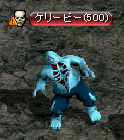
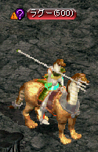
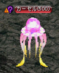
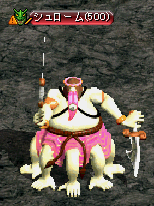

2次転生クエスト
途中の分岐があり、多少経験値が変わる。総経験値9500万〜1億500万。| 再び新たな人生へ ↓ ↓ ↓ 環境改善による方法 薬品による改善方法 魔法による改善方法 ↓ ↓ ↓ 運命の綛糸をもう一度 ↓ ミラージュストーン ↓ 湖の妖精 ↓ 意思の確認 ↓ ↓ 意思の確認：刀と盾 意思の確認：黄金と宝石 ↓ ↓ もう一度 |
| 再び新たな人生へ | |
|---|---|
アシャス・フェンに、もう一度、運命の綛糸を解いて新しい人生を歩みたければ、クェレスプリング湖のゼブ・ネイロリを訪ねるように言われた。 ゼブ・ネイロリに、クェレスプリング湖の水質を改善する方法を調べてくれという。オアシス都市アリアンにいるメロープに会って、水質改善に関する方法を聞いてみよう。 |
|
| 受諾場所 | ロマ村 ビスル アシャス・フェン（30.35） |
| 受諾条件 | Lv598 キャンセル不可 |
| 報酬 | - |
| クェレスプリング湖 | ゼブ・ネイロリ（85.192）へ |
| オアシス都市アリアン | メロープ（26.49）へ ?環境改善による方法 → ?そうします。 → 環境改善による方法 ?薬品による改善方法 → ?そうします。 → 薬品による改善方法 ?魔法による改善方法 → ?そうします。 → 魔法による改善方法 |
| 環境改善による方法 | |
メロープから、農村ラカリフサにいるティルンに会って、品種改良済みホットリアオイの種を受け取ってくるように言われた。 品種改良済みホットリアオイの種袋をオアシス都市アリアンにいるメロープのところに持っていこう。 品種改良済みホットリアオイの種をクェレスプリング湖のゼブ・ネイロリのところに持っていこう。 |
|
| 受諾場所 | オアシス都市アリアン メロープ（26.49） |
| 受諾条件 | Lv598 キャンセル不可 |
| 報酬 | 経験値2000万 |
| 農村ラカリフサ | ティルン（125.20）へ |
| オアシス都市アリアン | メロープへ |
| クェレスプリング湖 | ゼブ・ネイロリ（85.192）へ、酷寒の地へワープ |
| 薬品による改善方法 | |
メロープが、漂白剤を作るための材料を教えてくれた。バヘル大河 / 東バヘル川でバオバブの木皮を、鉱山町ハノブでは溶解液を。そして、神聖都市アウグスタで聖水を手に入れよう。 漂白剤の材料をすべて手に入れたので、オアシス都市アリアンにいるメロープのところに持っていこう。 漂白剤が完成した。これをクェレスプリング湖のゼブ・ネイロリのところに持っていこう。 |
|
| 受諾場所 | オアシス都市アリアン メロープ（26.49） |
| 受諾条件 | Lv598 キャンセル不可 |
| 報酬 | 経験値2000万 |
| バヘル大河 / 東バヘル川 | バオバブの怪物（Lv40）を倒す |
| 鉱山町ハノブ | ミュセン（60.82）へ 選択肢3 |
| 神聖都市アウグスタ | マティルダ（56.156）へ |
| オアシス都市アリアン | メロープへ |
| クェレスプリング湖 | ゼブ・ネイロリ（85.192）へ、酷寒の地へワープ |
| 魔法による改善方法 | |
メロープに、浄化の巻物を手に入れるのであれば、魔法都市スマグにいるトリノスを訪ねるように言われた。 浄化の巻物を購入したら、再びオアシス都市アリアンにいるメロープのところに戻ろう。 クェレスプリング湖のゼブ・ネイロリに、浄化の巻物を持っていこう。 |
|
| 受諾場所 | オアシス都市アリアン メロープ（26.49） |
| 受諾条件 | Lv598 キャンセル不可 |
| 報酬 | 経験値2000万 |
| 魔法都市スマグ | トリノス（33.75）へ、10万G払う |
| オアシス都市アリアン | メロープへ |
| クェレスプリング湖 | ゼブ・ネイロリ（85.192）へ、酷寒の地へワープ |
| 運命の綛糸をもう一度 | |
ゼブ・ネイロリの個人的な注文は完了したようだ。もう一度、運命の綛糸に関する話が聞きたければ、ベン・ダビーユと話してみるように言われた。 運命の綛糸を再び解きたいのであれば、それだけの価値を見せるように言われた。暁の使者たちが管理するクェレスプリング湖に戻り、ゼブ・ネイロリに会おう。 |
|
| 受諾場所 | クェレスプリング湖 ゼブ・ネイロリ（85.192） |
| 受諾条件 | Lv598 キャンセル不可 |
| 報酬 | - |
| 酷寒の地 | ベン・ダビーユ（16.42）へ 帰還アイテム使用不可。 ピルリア（13.33）に話すと古都ブルンネンシュティグへワープ。 |
| クェレスプリング湖 | ゼブ・ネイロリへ |
| ミラージュストーン | |
ゼブ・ネイロリが、ミラージュストーンを持ってくるように要求してきた。ミラージュストーンを作るために必要なミラージュストーンのかけらは、オーガの王窟のオーガチーフから手に入れることができる。 10個のミラージュストーンのかけらをすべて手に入れたら、鉱山町ハノブにいる石工のアルバートを訪ねてみよう。 ミラージュストーンにすることに失敗した。再びオーガの王窟に行って、10個のミラージュストーンのかけらを集めよう。 ミラージュストーンが完成した。クェレスプリング湖のゼブ・ネイロリに渡そう。 |
|
| 受諾場所 | クェレスプリング湖 ゼブ・ネイロリ（85.192） |
| 受諾条件 | Lv598 キャンセル不可 |
| 報酬 | 経験値3500万 |
| オーガの王窟 Ｂ１ | オーガチーフ（Lv80)を倒す |
| 鉱山町ハノブ | アルバート（113.33）へ 失敗した場合は再び、オーガチーフ（Lv80)を倒す |
| クェレスプリング湖 | ゼブ・ネイロリへ |
| 湖の妖精 | |
ゼブ・ネイロリの次の試練は、湖の妖精の行方を捜すことだ。彼女の最後の痕跡は、湖下の通路にあったという。湖下の通路に棲息する鷲闘士から、彼女の手がかりを探し出そう。 壊れたペンダントのかけらをすべて集めた。ゼブ・ネイロリのところに持って帰ろう。 ゼブ・ネイロリが直した妖精のペンダントを持った状態で、湖下の通路の鷲狂戦士を倒そう。彼らは、確かに湖の妖精の行方に関する手がかりを持っているはずだ。 破れた妖精の羽衣を手に入れた。再びゼブ・ネイロリのところに持って帰ろう。 ゼブ・ネイロリが言うには、湖の妖精は、間違いなく鷲剣士たちに殺されたらしい。鷲剣士たちを倒し、彼女の遺品を取り戻そう。 盟約の指輪を手に入れた。彼女の遺品をゼブ・ネイロリのところに持っていこう。 |
|
| 受諾場所 | クェレスプリング湖 ゼブ・ネイロリ（85.192） |
| 受諾条件 | Lv598 キャンセル不可 |
| 報酬 | 経験値2000万 |
| 湖下の通路 | 鷲闘士（Lv50)を倒す |
| クェレスプリング湖 | ゼブ・ネイロリへ |
| 湖下の通路 | 鷲狂戦士（Lv50)を倒す |
| クェレスプリング湖 | ゼブ・ネイロリへ、選択肢はどちらでも同じ |
| 湖下の通路 | 鷲剣士（Lv45)を倒す、洞窟の中心に1匹2分湧き |
| クェレスプリング湖 | ゼブ・ネイロリへ、酷寒の地へワープ |
| 意思の確認 | |
ゼブ・ネイロリの試練をすべてクリアした。再び、酷寒の地に向かい、ベン・ダビーユと話をしよう。 |
|
| 受諾場所 | クェレスプリング湖 ゼブ・ネイロ（85.192） |
| 受諾条件 | Lv598 キャンセル不可 |
| 報酬 | - |
| 酷寒の地 | ベン・ダビーユ（16.42）へ ?もっと強くなりたいからです。 → 意思の確認：刀と盾 ?う〜ん…もっと様々な経験をしたいから…かな？ → 意思の確認：黄金と宝石 |
| 意思の確認：刀と盾 | |
ベン・ダビーユが教えてくれた悪党グループの1人目を退治しなければならない。河口ダンジョン 'ド' Ｂ３に隠れているらしい。ヤツを退治して、印を手に入れよう。 ベン・ダビーユが教えてくれた悪党グループの2人目を退治しなければならない。河口ダンジョン 'レ' Ｂ２に隠れているらしい。ヤツを退治して、印を手に入れよう。 ベン・ダビーユが教えてくれた悪党グループの3人目を退治しなければならない。河口ダンジョン 'ミ' Ｂ１に隠れているらしい。ヤツを退治して、印を手に入れよう。 ベン・ダビーユが教えてくれた悪党グループの4人目を退治しなければならない。河口ダンジョン 'ラ' Ｂ２に隠れているらしい。ヤツを退治して、印を手に入れよう。 悪党グループのメンバーを全員退治して、すべての印を集めた。クェレスプリング湖のゼブ・ネイロリに頼んで、酷寒の地に向かい、ベン・ダビーユと話をしよう。 |
|
| 受諾場所 | 酷寒の地 ベン・ダビーユ（16.42） |
| 受諾条件 | Lv598 キャンセル不可 |
| 報酬 | 経験値3000万 |
| 河口ダンジョン 'ド' Ｂ３ | ケリービー（Lv500)Zinを倒す、（71.60）を中心に広範囲にランダムで1匹1分湧き  |
| 河口ダンジョン 'レ' Ｂ２ | ラグー（Lv500)Zinを倒す、（108.65）を中心に広範囲にランダムで1匹1分湧き  |
| 河口ダンジョン 'ミ' Ｂ１ | カーセル（Lv500)Zinを倒す、（125.139）を中心に広範囲にランダムで1匹1分湧き  |
| 河口ダンジョン 'ラ' Ｂ２ | シュローム（Lv500)Zinを倒す、（74.60）を中心に広範囲にランダムで1匹1分湧き  |
| クェレスプリング湖 | ゼブ・ネイロリ（85.192）へ、酷寒の地へワープ |
| 酷寒の地 | ベン・ダビーユへ |
| 意思の確認：黄金と宝石 | |
ベン・ダビーユの要求通り、港街ブリッジヘッドのナターシャを訪ねて、彼女の試練に合格しよう。 ナターシャの1つ目の試練は、物々交換。彼女のブルーローズマリーで、プエルが直接カスタマイズしたゼラタというシミターを手に入れよう。 ブルーローズマリーをゼラタと物々交換することに成功した。ナターシャのところに戻ろう。 ナターシャの2つ目の試練は、商人に大事な信用を使っての先物取引だ。プエルを訪ねて、先物取引に挑戦しよう。 簡単にはいかなかったが、とにかく取引に成功した。ナターシャのところに戻ってプエルの契約書を見せよう。 ナターシャの試練をすべてクリアした。クェレスプリング湖のゼブ・ネイロリに頼んで、酷寒の地に向かい、ベン・ダビーユと話をしよう。 |
|
| 受諾場所 | 酷寒の地 ベン・ダビーユ（16.42） |
| 受諾条件 | Lv598 キャンセル不可 |
| 報酬 | 経験値2000万 |
| 港街ブリッジヘッド | ナターシャ（26.63）へ プエル（55.78）へ 選択肢221 ナターシャへ プエルへ 選択肢21 ナターシャへ |
| クェレスプリング湖 | ゼブ・ネイロリ（85.192）へ、酷寒の地へワープ |
| 酷寒の地 | ベン・ダビーユへ |
| もう一度 | |
もう一度、運命の綛糸を解くためには、前回と同じように運命の綛糸に必要な神獣の体液が必要だという。モリネルタワー 地上４階にいるブレイザーを倒して神獣の体液を手に入れよう。 運命の綛糸に必要な神獣の体液を手に入れた。クェレスプリング湖のゼブ・ネイロリに頼んで、酷寒の地に向かい、ベン・ダビーユのところに戻ろう。 |
|
| 受諾場所 | 酷寒の地 ベン・ダビーユ（16.42） |
| 受諾条件 | Lv600 |
| 報酬 | 2次転生 転生者Lv2 |
| モリネルタワー 地上４階 | ブレイザー（Lv620)Zinを倒す |
| クェレスプリング湖 | ゼブ・ネイロリ（85.192）へ、酷寒の地へワープ |
| 酷寒の地 | ベン・ダビーユへ |